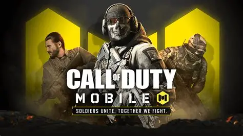
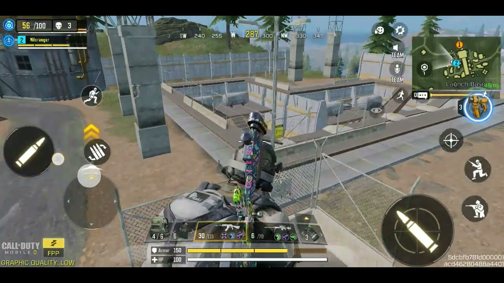
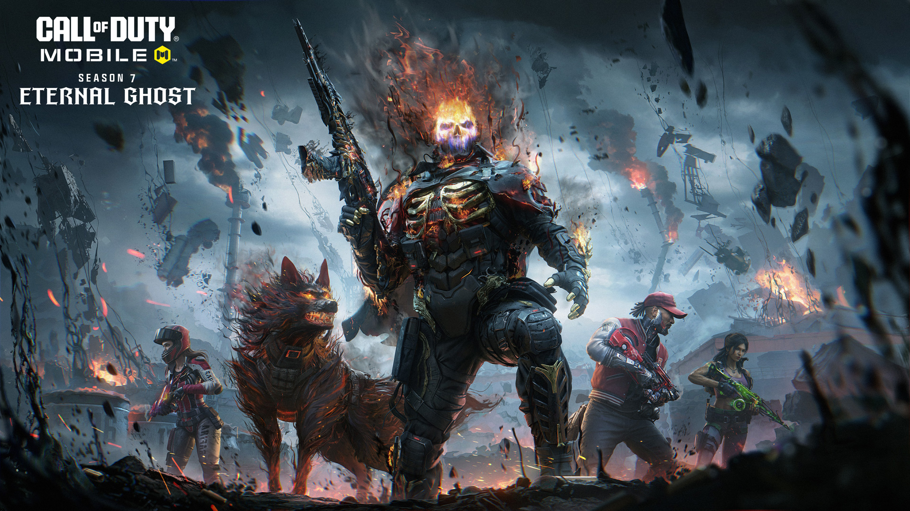

FPS / TPS / Multiplayer / Sparatutto


Se cerchi uno sparatutto frenetico in prima o terza persona, Call of Duty Mobile è il titolo perfetto per mantenere i riflessi e l'attenzione sempre al massimo. Il gameplay ti catapulta in sfide multiplayer dove due team contrapposti devono raggiungere il limite di uccisioni previsto dalla modalità o conquistare e difendere zone strategiche della mappa.
L'elemento frustrante è che, per logiche interne incomprensibili, quando l'algoritmo decide che la tua serie di vittorie deve interrompersi, non avrai scampo. Puoi metterci tutte le skills e la mira del mondo con la tua classe preferita, ma verrai sistematicamente accoppiato a compagni di squadra palesemente inadeguati o sbattuto contro un team di avversari imbattibili. Nei momenti peggiori queste due problematiche si sommano, trasformando il match in un'esperienza in cui è letteralmente impossibile rimontare.
Un aspetto decisamente riuscito del gioco è la gestione del Clan, con la "Guerra tra Clan" a cadenza settimanale. La sfida si sviluppa su una mappa piena di nodi da conquistare completando obiettivi mirati, accumulando punti per sbloccare skin epiche o leggendarie. Va aggiunto che per chi vuole un'esperienza ancora più massiccia il titolo offre una modalità Battle Royale da 100 giocatori, un'ottima aggiunta che purtroppo strizza troppo l'occhio al sistema "pay to skin".
